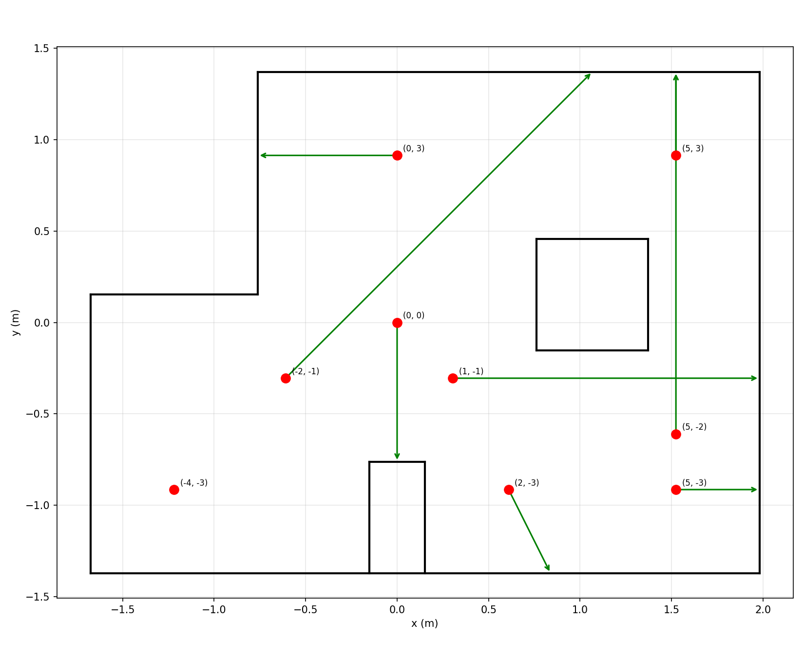

Lab 12: Path Planning and Execution
Objective
The goal of Lab 12 was to navigate the robot through 9 fixed waypoints as accurately and reliably as possible. Given the fixed map and waypoint sequence, I implemented an offboard planning + onboard execution strategy: Python handled all path computation via BLE, while the Arduino firmware executed two primitive motion commands — turn and drive. I chose not to use Bayes filter localization during the run because each scan requires the robot to rotate a full 360°, which is time-consuming and introduces additional failure modes. Instead, I relied on closed-loop orientation control and closed-loop ToF position control to achieve sufficient accuracy.
Path Planning
All planning was done offboard in Python before the run. Using the wall geometry from world.yaml, I implemented a ray casting function to compute the expected ToF reading at each waypoint along the robot's heading direction. This value served as the position PID setpoint.
However, ray casting results alone were not reliable enough due to map inaccuracies. I physically placed the robot at each waypoint and measured the actual ToF reading, then used those measured values as the final setpoints.

| Seg | From | To | Turn Delta (°) | ToF Setpoint (mm) |
|---|---|---|---|---|
| 1 | (-4,-3) | (-2,-1) | +45.0 | 2400 |
| 2 | (-2,-1) | (1,-1) | -48.0 | 2150 |
| 3 | (1,-1) | (2,-3) | -63.4 | 384 |
| 4 | (2,-3) | (5,-3) | +63.4 | 380 |
| 5 | (5,-3) | (5,-2) | +90.0 | 2065 |
| 6 | (5,-2) | (5,3) | +0.0 | 400 |
| 7 | (5,3) | (0,3) | +90.0 | 780 |
| 8 | (0,3) | (0,0) | +90.0 | 780 |
Note that segment 2's delta was empirically adjusted from -45° to -48° to compensate for a consistent heading bias observed during testing.
Motion Primitives
Two BLE commands were implemented: NAV_TURN and NAV_DRIVE.
NAV_TURN accepts the relative turn angle and PID gains. It uses the DMP yaw accumulator as feedback — yaw_accum is reset to zero at the start of each turn, so the setpoint equals the relative delta directly. The turn is considered complete when the error is within 10° and stable for 300ms.
NAV_DRIVE accepts the ToF setpoint and PID gains. It runs a position PID loop against the front ToF sensor. The drive is considered complete when the ToF error is within 30mm and stable for 500ms.
def nav_turn(abs_heading, delta):
ble.send_command(CMD.NAV_TURN, f"{delta:.1f}|1|0|0")
time.sleep(3)
def nav_drive(tof_mm):
ble.send_command(CMD.NAV_DRIVE, f"{tof_mm:.0f}|0.17|0.0006|0.05")
time.sleep(5)| Parameter | Value |
|---|---|
| Turn kp / ki / kd | 1.0 / 0 / 0 |
| Drive kp / ki / kd | 0.17 / 0.0006 / 0.05 |
| Turn sleep | 3s |
| Drive sleep | 5s |
Collaboration
I collaborated with Donghao Hong on this lab. We used the same waypoints and the same offboard-planning, onboard-execution architecture. The key difference was in straight-line control: Donghao used open-loop timed driving calibrated with a ms_per_ft parameter, while I used closed-loop ToF position PID. The closed-loop approach is theoretically more robust to battery level variation and floor friction, but places a stricter requirement on the accuracy of the ToF setpoint — which is why I measured each setpoint physically rather than relying on ray casting alone.
Results
The robot successfully completed all 8 segments in one clean run.
Discussion and Limitations
The most challenging waypoint was the final one, (0,0). Segment 8 travels south from (0,3) to (0,0), where the ToF setpoint of 780mm relies on the robot facing the small box obstacle protruding from the south wall. This obstacle is only about 30cm wide, so even a small heading error causes the ToF beam to miss it entirely, reading 1000mm+ and causing the robot to overshoot.
More broadly, heading error accumulates across segments. Since each turn resets yaw_accum to zero, a small residual error from one turn becomes the starting condition for the next. Over 8 segments this drift is noticeable, especially for the later waypoints.
A more robust version would add a localization scan at one or two key intermediate waypoints to correct accumulated error before the long final sequence. This was not implemented because scan time would significantly slow down the run and introduce additional failure modes.